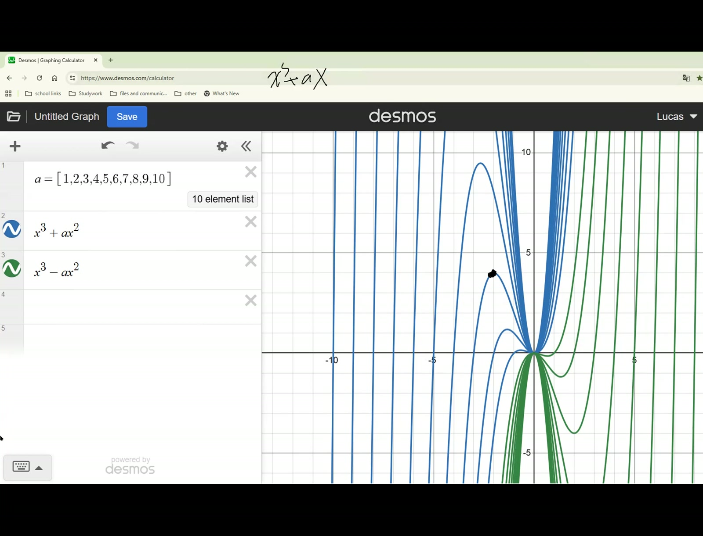
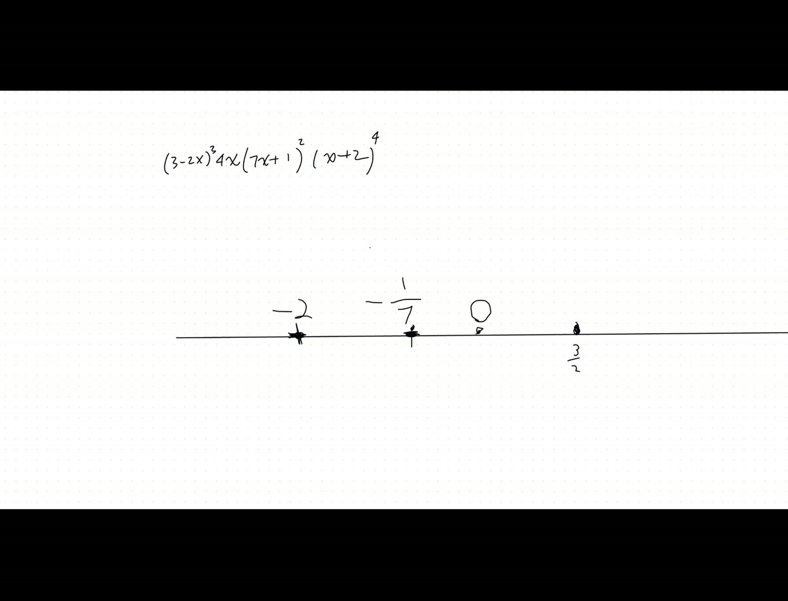
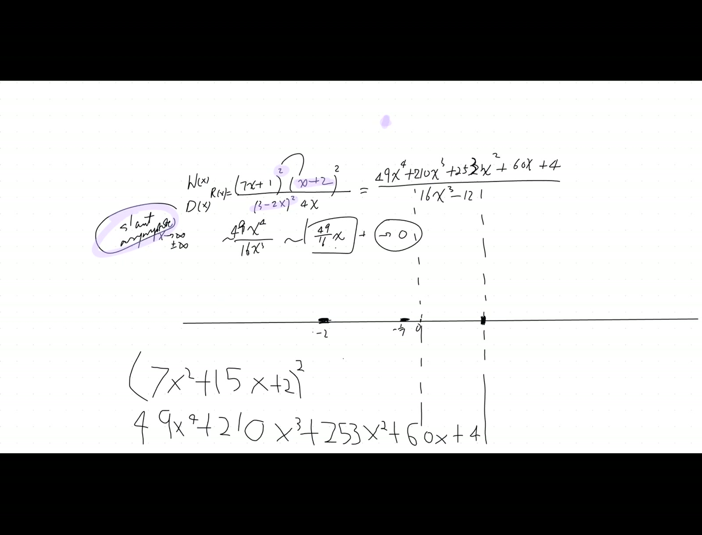
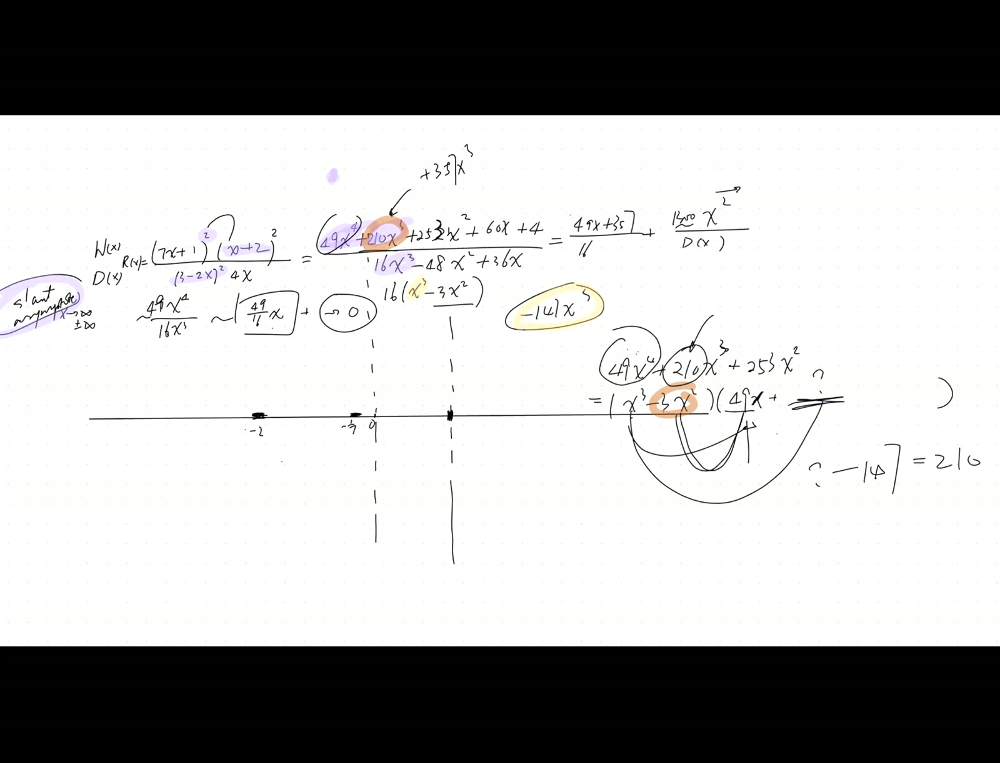

Polynomial Snaking Method; Rational Functions and Slant Asymptotes via Long Division
Lead
Introduces the snaking method for graphing polynomials with multiple real roots (alternating signs in intervals between roots), then extends to rational functions via polynomial long division to extract slant asymptotes and analyze approach direction from the remainder’s leading term.
Theorems
(Polynomial snaking). For a polynomial \(p(x)\) with distinct real roots \(r_1 < r_2 < \cdots < r_k\) (with multiplicities), the sign of \(p(x)\) alternates across each odd-multiplicity root and stays the same across each even-multiplicity root. The graph crosses the \(x\)-axis at odd-multiplicity roots and bounces (tangent) at even-multiplicity roots. \(\tag{83}\)
(Slant asymptote via long division). For \(R(x) = p(x)/q(x)\) with \(\deg p = \deg q + 1\), long division yields \(R(x) = Q(x) + r(x)/q(x)\) where \(Q\) is linear and \(r(x)/q(x) \to 0\) as \(|x| \to \infty\). The slant asymptote is \(y = Q(x)\); the sign of \(r(x)\) for large \(|x|\) tells whether the graph approaches the asymptote from above or below. \(\tag{84}\)
Verification audit
- Snaking on \(p(x) = x(x-2)^2(x+1)\). Roots \(-1, 0, 2\) with multiplicities \(1, 1, 2\). As \(x \to \infty\): \(p > 0\). Crossing at \(x = 2\) → no (even multiplicity, bounces). Crossing at \(x = 0\) → yes, sign flips. Crossing at \(x = -1\) → yes, sign flips. So signs are \(+, -, +, +\) (right to left across intervals).
- Slant asymptote \(R(x) = (x^2 + 3x + 2)/(x - 1)\). Long-divide: \(R = (x + 4) + 6/(x-1)\). Slant \(y = x + 4\). For \(x \to +\infty\): \(6/(x-1) > 0\), so graph approaches from above. For \(x \to -\infty\): \(6/(x-1) < 0\), approaches from below. ✓
Lecture video
Key frames




Fragility summary
- Complex roots in the denominator give no vertical asymptotes (the irreducible quadratic factor is positive everywhere or always negative).
- Slant asymptote crossings. The graph can cross its slant asymptote at any zero of \(r(x)\) — important to identify.
- Confidence. Both theorems: high (pre-calculus standard).
Full transcript
Better now, Bernie. Thank you. Right, let's get a whiteboard. And I am once again very pleased with most of the homework I'm seeing. And I'm going to ask you personally whether there are questions we need to address before we move on. I still want to spend two more sessions today in the morning and in the evening so that we can deal with, or rather, just practice using transformations.啊， to handle the relationship between the graphs, especially oh, sorry, want to get rid of that, ah, scale the graphs and how to write their equations. One second, okay.啊？Why do I still have this? I thought I deleted. Wow, this is actually quite a few days ago.Seven hours? One second, let me try again. I really don't want that. Ah, hold on. Thank you, Toby. Good to see you, Lucas. Ah, actually, after playing around with Desmos a bit more, like ah last time I shared about like the the vertex, the vertices of parab of ah many parabolas, they make another parabola. So I noticed that if you make likeThe turning, the like turning points of many cubics, they also look like it could be another cubic. I'm wondering, first of all, is it a cubic? And second of all, is it for any polynomial of the general form a x to the n plus? Wait, they're just x to the n plus a x to the n minus one, or at or an a and you graph all of the turning points, will it be uh like n cubics or n like n bics? II couldn't quite understand what you mean by any cubics or any. Are you talking about how do we know the power of the polynomial? No, so I'm like, I was playing around with Desmos again. Like last time, I already I said when we graph a lot of parabolas, would their their vertices make another parabola? So for cubics, when I graphed a lot of cubics, I noticed that their turning points made another cubic. So is it for an for an n degree polynomial?哦啊，哎，Hold on， it actually depends on what you mean by a lot of cubics， and it's not arbitrary a bunch of cubics here， but instead we're talking about a sequence of the cubic. They follow a certain pattern of the parameter. Forgive me， I'm gonna actually use a whiteboard from here because somehow I just cannot get rid of that cumbersome whiteboard. I have to delete it after fifteen minutes， andI mean, I have to clear it for fifteen minutes before I can delete it. So let's use it. In fact, and Lucas is actually asking, we had an observation earlier, meaning, and we had a family of polynomials, and those are actually depending dependent on the axis symmetry. In fact, they were. And Lucas, would you give us the family of the of the quadratic graphed earlier, so that the vertices for on the on the quadratic and then
And give me the family of the cubic zero graphing. They're not arbitrary family. They're only different by one single parameter. So the for the parabolas, I made I made them for like x squared. Apparently, Zoom doesn't. Let me let me write it down for you. We did the x squared plus ax plus ax, and that's it equals y. Yes, and this is a a family of the parabolas we graphed, and then whenWhat about the family of cubics? I'll call that the y three. I did x cubed plus a x squared. Ah, well then, and okay, let's investigate. First of all, for every single cubic, there will be two turning points. There are cubics that has no turning points at all. For this one here, and must we have turning points, or could we choose some of the a's to have no turning point? In fact, there are plenty of a's that's not going to giveus any turning point, right? For example, any a is greater than zero would be sure to give us a monotonically increasing function without any turning point. And then, first of all, what is the minimum a? Rather, what is the maximum a? Or what is that threshold a under which we would have some turning point? By the way, Lucas, I bet you have already done the graphs, right? Yeah, I've filled them. Okay, and let's actually see. Well, what is the best way?To look at what's the graph of this, we're gonna actually reveal something we did before. Elaine, could I have your video, your video, please? Or are you only here to take? Oh, beautiful! So, share my screen. I yeah, you feel free to do so. You can just ask me. Yeah, go ahead. I said I can't share screen when you're on the whiteboard. Okay, let me get rid of that.There we go. So it's like all the vertices, all the turning points. There, all the turning points will have one right here, and then they're gonna make another cubic. Ah, but notice here, there's another turning point for every single branch, though. Yeah, no, all of them are just stay, just appear at zero, zero. Okay, well then, if youAgain, show us the trace of the vertices. I don't know what the graph or the all the vertices is, but it's going to be like. But we're going to find out in a second here. Well, the point is, we do what we did earlier. But the question would be, how do we easily locate what is a vertex of a cubic? That's the question, right? And in fact, we've been treating this problem here in several guises up to this point. And first time, and I think it was actually Toby who raised the issue: how do we minimize?or maximize a cubic, we used some kind of tweak of the AMGN. But he also brought to us attention that we could also take the derivative to find out. and And by the way, I was going to show you, Lucas, your judgment that the the origins, the turning point, is wrong, except for the first one, and for later versions of the cubic here. andAnd these origins never the turning point. In fact, the two turning points are. Oh, you're saying actually for for example for that branch. Yeah, it is the turning point. Sorry, it is a turning point. It is a turning point because in my in my mind, I was visualizing this. Not plus a i squared here. So, and the quickest way to find all the turning points in the future is to take the derivative.
But let me actually answer the question: How do we graph a cubic? Easily identifying the symmetry. I first of all want to find out where do we have the center of symmetry. Do we still remember every single cubic? I'll just write here, just so that people can look at the graph together with the derivation. Okay, the family of the cubic we're looking at is this now. In order to get to the graph, well, there are several things you could do. And first of all, we could actually factor out x squared left with a plus the.x plus a， immediately you know all the x intercept. Those are zero, which is a double root, and a x equal to negative a, it's one of the single root. Remember the double root. Leading coefficient positive, you start from the positive side. And Helms, would you help me finish the graph of here? Just how do we read through the cubic equation? Like find the graph of this.equation？ Yes, I have already factored it down. I've already located what is what are the two x-intercepts. Eddie, how do we graph it? This is reviewing some old stuff. Please concentrate. If you find your memory fading, Eddie.How do we graph this? Is it um something like this? Beautiful. And tell me why you started from the right hand side. So, um.It's, he said, the this side. I know, it's the X. I kind of just guess that it's from this side. I, whoever that's actually connecting these points now, I want you to start paying attention, and.呃，Could somebody answer Helms？ How why do we start from the right hand side？ I can't react because I'm scared because I'm sharing the screen, but I have an idea. Go ahead. So, like this is like a like a trick I learned from school. So I tried by first looking if if uh between those regions, like if it's if it's less than negative than negative a between negative a and零或 greater than zero. Right, but then you plug in a number, right? No, I want to see if they're positive or negative. I understand. You do sort of try out a number between the negative and zero to see what would be the sign of each of the parentheses. Hey, guys, you guys are acting as if I haven't taught you. The quickest, the most convenient way to graph a polynomial once you know all the factors. Are you telling me I have never taught you this?That's the safest, is the quickest way to do it. Eddie, do you remember? Or what's your way of doing it? Take the derivative and find the critical points. Really? And Ely, how do we graph it? Toby, how do we graph
Have a polynomial. This could be polynomial, please. Um, you, um, like take where the y is zero. Yeah. The y intercepts. Yes, and well, okay. No, the x intercepts. The x intercepts. Okay, beautiful. And the y intercepts. Right, setting point. And.And here, we call that the snaking method. I don't know how many times more I have to teach you this because I have done that several times now. Meaning, when you have a polynomial, factor it out, put down all these x intercepts. That's where whatever the graph would hit that.x 轴， mark where it's a double root, where it's a single root. I only say once, and I'm looking for everybody to answer me how to do it. Now mark all the double roots and the single roots. I equal zero, it's a double root. And usually, I just draw a double root as a bar, meaning the function doesn't change the sign when it hits that point. The other single root, the function is going to cross the x 轴。 You always start from the right hand side because it's easy for you to eyeball from the leading coefficient here. Because remember, only.The highest degree would be the prominent term when the magnitude of x is approaching infinity. So at one glance, you would know you start from the pole infinity, and the rest of it you just snake through all the intercepts. Meaning it comes down to hit the x-axis. It's a single root across it. It's a single root go across it. Double root bounce back. Single root, single root. That's it. Is that clear? Have I told you this? How many times?Do I have to do that? Answer me one by one. Write it down at the cover of your notebook. Your answer, Tom's. How many times do I have to do? I need to teach you this more. Zero. Really? Be realistic, because I can tolerate kids who do not learn for a while, and the kids who don't know material.I don't tolerate liars. That means next time, if you don't remember this, you're out. So please be honest with your estimate of yourself. Maybe one or two. Well, write down two, please. Let me see whether you could survive four years, Lucas. How many times do I need to teach you this? I'm gonna try to take notes, so in the in the future, if I I might forget and I have to take and I have to look at my notes.Well, have I not taught you to do that? Also, create the inventory of all your nodes so that they're electronically searchable in real time. Have I not said that? Yes. So how many times? One more time, maybe. Good. You're being prudent. My guess is zero, but good, Elaine. Uh, I'd say three times. Very good.Put it on the cover of your notebook so that you will never have any excuse. You don't remember what you promised me, Eddie. I'll say two or three times. Let's go for three, because I don't want to lose any of you. I think you guys are very trying, are trying very hard to be lost. Catherine, three, good. Toby, um, maybe like.
Four? What? No, more likely it's zero for you. Okay, no, I like a softly facing modest kid. Or write down four, please. Well, it's not that I am demanding that you have to meet a certain criteria, but instead, but it doesn't bode well. If whatever I've taught you, this is so simple, intuitive, graphical, invisible, and then you still don't remember it, it just means, well.I I don't think mathematics is your game. We'd we'd better just do something else. I'm pretty sure because each of us is coming to this earth with some kind of a gift. Okay, you don't have to be the top student at school. All right, also, hey, go ahead. How come like that is a curve? Because like if you have like a x squared, isn't that like the y gets raised up byax 平方，所以的， turning points， well， for the turning point is the derivative. If you really want to find the turning point here, then you're gonna actually set this to be zero. Eddie, I was harsh. Eddie was taking calculus. He is taking calculus, so his answer is not wrong. He's saying taking the derivative. That's not wrong. It just said that you have forgotten which class you're in, and whenever we could do it without taking the derivative, in this case.which would be easier. We don't have to take the derivative. In fact, this is the quickest way you can find out where is the turning point. And Toby is actually alerting to us to the fact here it's not going to be a curve; it's a straight line. We shall find it out. Toby is realizing. And if you put all these, to you set at to zero, the two turning point, the one solution is x equal zero, the other solution is x equal to ninety two a over three. So for differentA is here. All these turning points would fall on the line instead of a curve here. Meaning, if we do it accurately and you graph all these, just connect all these together, they should be on a straight line. I actually don't know what goes on. Oh, I think it's exactly because actually, Lucas, you.Manually change that to negative a i squared. Oh, then okay, you are permitting because you're only picking the values of the a. So, ah, indeed, that makes me a little curious as well. 嗯？ I mean, I'm actually acknowledging. I feel a little curious because supposedly the the turning point is locating on the negative two a over three.So they should follow this strict line here, because as your a decreases, the x would. Oh, right, actually, Toby, Toby, no, and this is the location of the x now, meaning they are arithmetic. But however, though, when you actually plug them back into the y, what you're getting surely would be a cubic. The point is, there's a linear relationship between x and a. So, meaning in the future, my a axis would.Also be my x axis now. By the way, that's actually the end point I'm trying to reach without using calculus. But can I go back to my whiteboard now? Okay. Wait. So in that snaking method, yeah. How do you know whether it's like a single or a doubles? Well, you read off the power on the factor, the crisp one. In fact, I was about to give you a couple more example.
例子 here， so let's graph this. If I give you the three minus a two x and cubic and the four x and then the seven x minus a plus a one squared and then you followed by a this is a let's say and a x plus a two and fourth power， how do you graph this? Go ahead， Lucas. So first wemark them, we mark all the our intercepts and mark them whether or not with whether they're a single root, double root, triple root, quadruple root, etc. Yeah, the first root would be three halves. Uh huh. Three halves, let's just mark that here, and we and I'm I'm just gonna mark it as a three below, so I know that. Right. So this is gonna be three halves. Oh, oh, that's three halves. That's fine. Okay.哦，Sorry。 How how wait, we can mark it with a dot since it's essentially the same as a single root. Yes. Right. So the next one would be four x, so it's x equals zero is a root. Yes, beautiful. And then it would be a seventh, and mark that with a double root. Uh huh. Oh no, negative a seventh, yeah. Yeah, double. And I'm gonna actually mark that as a bar.And the last one is negative two. Yes. Also, long. So after we graph, we come from the. So wait, after we expand it out, we get. I think our leading coefficient is negative. Beautiful. He's noticing here. Notice, there's a哎，Come on. Why does that give me?The options of the pen. 哈，OK， so this is where the leading coefficient is， and that gives you a bar instead of a and sorry that gives you actually a negative number. Remember because it's raised to the cube. So we're actually going from the positive side. Go ahead, finish this. So we're coming from the we're coming from the negative side, so it would look like. Oh, sorry, yeah, we're.Coming from the negative side. Do you want me to draw it? Sort of like that. Yes, perfect. That's it. Maybe it's a little like deeper pie or something. Yeah, they are, but we haven't marked the scale, you know, what direction. So this is perfectly reasonable. Toby, and you notice here what we call a double root and a single root is simply here. It is what we have on the power. Obviously, that tells you surrounding that root here when you go through it.或当您穿过它，以及y是否改变方向，或者不。同样，我们学习绘制一些比多项式更复杂的图形。如果我实际上坚持在这里，同时我实际上移动了几个项。看，我实际上要移动这三减去二x立方和四x到分母。所以这就是我们要绘制的。然后这次在这里，以及将要变成。be our graph. Let me actually just clarify the locations more carefully now. And again, well, do you guys remember how to how we graph a rational function? Yeah, me. What about everybody else? Answer me quickly! I don't really remember. I be
People who do remember, can I see your hands, please? I remember part of it. I remember most of it, but not all of it, not yet. Wow. Uh, add onto your page here that I at most teach you as many times you prom promise me about how to graph polynomials and rational functions. In the future, don't make yourself a liar. This is about.self knowledge。 Alright, what you do is that you mark all the intercepts. However, if there's going to be a zero of the denominator, and that's not the intercept, it's asymptote. When the denominator is approaching zero, let me actually put that. That's the numerator as a function of x. This is the denominator as a function of x. The numerator zeros are the real x-intercept of a whole graph, and they are x equal to negative two.这是零，负二它是偶根， right， and that's here. And I drew it as a horizontal bar to remind ourselves in the future the curve would bounce off it. So don't draw a vertical bar. Well, you're your own man. You can draw a vertical bar, but I'm trying to make it visually intuitive for you. And then that's negative two, negative one seventh. Sorry, I don't know what happened there. Negative one seventh, likewise, that's a bar. These are the only x-intercept.Now, second step number one, put all the x-intercept there. Step number two, put all the vertical intercepts there. And that actually means when x is approaching zero, the whole function would be approaching infinity. So draw it in dotted line. Although that happened to coincide with y-axis now, that's one asymptote, and it's a single root. To illustrate the difference here, I'm going to change that into a square. I also want to change that for another.So please make sure that your setup is corrected. Otherwise, in the future, when you review, you won't be able to match your graph with the equation. So that's a square here, and I label that as actually the three halves, which is here, and that's another asymptote. But keep in mind, it's a double root, so you're going to actually just draw. You can draw a vertical bar here to this.You distinguish it from a single root. Now, you think about what's the difference. Whenever we're hitting an x-intercept, now if it is an even root, then you don't change the sign of your y. The very behavior the function bounces back is that whenever you plug in a number slightly smaller than the two negative two or slightly bigger than the negative two, there's no difference in the sign out of that parenthesis. Well, there is a difference definitely when you cross.whatever the intercept, but nevertheless, because it's fourth powered, then there's no different to the sign. Are we going to get similar behavior for the zeros on the denominator? So, like, basically, it's like the thing. So, in the negative, it's like the thing where if you go at the top, you get teleported to the bottom. Yeah, absolutely, very good. Toby is telling us exactly how do we get that. Yes, perfect. Would be likeThis or like this? Well, it's asymptote, so you gotta to approach it. And if you like this, you won't be able to approach it, because that curve would end up somewhere. So, and in a second, we shall graph the entire graph now. And then three, you also start from x equal to positive infinity. And also, don't hurry. Actually, we don't know that yet. So, can we remove that little curve? We do not know that it's approaching that.
at the infinity, yeah. Okay, now we start from an axis approaching power infinity, and in order to find what's happening now, you've got actually the contention between the highest power on the numerator and the highest power on the denominator. So first of all, we want to find out what about the horizontal or the slant asymptote. When axis approaching infinity, what's going to happen to this rational function, which I call the R x? How would you quickly顶部，Lucas，顶部是 positive， and we have an and we have a coefficient times x raised the sixth. And the bottom is哎，不不不，你 mean seven？ you you actually mean the seven x to the sixth power， don't you？ No, it's forty nine. Yeah, it's forty nine. It's actually sorry, the seven squared. So what you're getting is a coefficient of forty nine x to the sixth power.That's the leading term on the numerator. That's the only term that matters when it comes down to look at the magnitude. And what do we divide by? We divide by that sixteen x cubed. Very good. Because we had to raise the two to the second power, we're getting positive sixteen x cubed. So this is still hugely positive infinity, correct? Yep. Okay. If I want to get ancurved graph now by changing this power into second again, guys, you have to go back to change your setup. And then, well, the only part I need to change will be this. Now, on the top, you get x to the fourth, don't we? So it still come from infinity. Yes, it will still go to infinity. Now, however, let's actually notice, and do we have a asymptote in the horizontal direction? Yes, we.We actually have a line, meaning when x is really, really big now, then whatever this function, it's almost a line, and followed by a miscellaneous little term which is approaching zero. But how do we find the line? Is it enough to keep only these two terms and saying roughly what you're getting is simply forty-nine over sixteen x? May I say that?Unless x is zero, we're talking about the asymptotic way. This is only true when x is approaching positive or negative infinity. You think about the orders, the infinitesimal or infinite we have been dealing with. Is it enough? If eventually, what we have here is a slant asymptote. I think for the positive direction, yes. But for the negative direction,Think it's the opposite. No, it's still the same line because I haven't anything that's limited to only power infinity, have I? I only picked out the leading powers. Yeah. So this is still legit, even at negative infinity, correct? If we plug in it.When we play negative and Shindy, the top is positive, bottom is negative. But that's borne out by the fact we still have an X left. Oh yeah, oh yeah, yeah, never mind, yeah. So I didn't draw any conclusion about the number. I only manipulated the terms. Yeah, I agree, I agree. And then, is this enough to actually draw the conclusion? This is a very line going through the origin. It's where the whole function is approaching. Meaning, I draw that line now.
And where is this? And can I just start from here and then do a do my graph in such a manner? I'll tell you the answer is no. Meaning, if you want to make sure whatever that remaining part is approaching zero, what should we do? How many we see? We're keeping the leading powers. They are.Representing when x is really, really big, what the numerator and the denominators are approaching. Roughly speaking, that's not wrong. But is it actually accurate enough to keep only one term from both the top and the bottom and draw this conclusion? What if we try keeping two terms? Well, hold on. Well, I'm not asking you to simply guess. I want you to reason through this.Toby，Are we trying to find the？ We're trying to find the slant asymptote. What's going to to be more accurate? What's going to happen when x is approaching positive or negative infinity? We learned this before.哦。Well, you have to visualize all the terms you have eliminated. Okay, well, generically on the top, you're getting actually forty-nine. In fact, why don't we multiply it out and tell me what would be the numerators when you expand it out in individual terms?嗯。好，Don't you mean fourteen x there, Toby? Don't you mean forty nine x? I'm multiplying the seven x plus one and the x plus two. Oh, okay, you're multiplying that first. Fine, fine, fine. Sorry, I should have noticed. Yeah, and then you're right, and then you're gonna square that.which is fine. Although I find that totally easier to actually do, or anyway.
I think I'm actually getting that wrong.嗯。I'm done. I got forty-nine x to the fourth plus two ten x cubes plus two five two x squared plus sixty x plus four. I'm getting the same. Tell me, I'm getting two five two. I got two five three. Yeah, you're right. It should be because there's another one. In fact, there's.There's another x squared here, actually, Lucas. There's three ways to get to the x squared. I missed that. I missed that. Yeah. Anyway, so this is the entire polynomial. We don't need to. We we do not need so many terms. In the future, it turns out, but I need to judge how many terms we need on the denominator. That's a lot easier. What you're getting would be the sixteen x to the cubed here, and subtracted by twelve. In fact, forty-eight.x²x²x²x²x²x²x²x²x²x²x²x²x²x²x²x²x²x²x²x²x²x²x²x²x²x²x²x²x²x²x²x²x²x²x²x²x²x²x²x²x²x²x²x²x²x²x²x²x²x²x²x²x²x²x²x²x²x²x²x²x²x²x²x²x²x²x²x²x²x²x²x²x²x²x²x²x²x²x²x²x²x²x²x²x²x²x²x²x²x²x²x²x²x²x²x²x²x²x²x²x²x²x²x²x²x²x²x²x²x²x²x²x²x²x²x²x²x²x²x²x²x²x²x²x²x²x²x²x²x²x²x²x²x²x²x²x²x²x²x²x²x²x²x²x²x²x²x²x²x²x²x²x²x²x²x²x²x²x²x²x²x²x²x²x²x²x²x²x²x²x²x²x²x²x²x²x²x²x²x²x²x²x²x²x²x²x²x²x²x²x²x²x²x²x²x²x²x²x²x²x²x²x²x²x²x²x²x²x²x²x²x²x²x²x²x²x²x²x²x²x²x²x²x²x²x²x²x²x²x²x²x²x²x²x²x²x²x²x²x²x²x²x²x²x²x²x²x²x²x²x²x²x²x²x²x²x²x²x²x²x²x²x²x²x²x²x²x²x²x²x²x²x²x²x²x²x²x²x²x²x²x²x²x²x²x²x²x²x²x²x²x²x²x²x²x²x²x²x²x²x²x²x²x²x²x²x²x²x²x²x²x²x²x²x²x²x²x²x²x²x²x²x²x²x²x²x²x²x²x²x²x²x²x²x²x²x²x²x²x²x²x²x²x²x²x²x²x²x²x²x²x²x²x²x²x²x²x²x²x²x²x²x²x²x²x²x²x²x²x²x²x²x²x²x²x²x²x²x²x²x²x²x²x²x²x²x²x²x²x²x²x²x²x²x²x²x²x²x²x²x²x²x²x²x²x²x²x²x²x²x²x²x²x²x²x²x²x²x²x²x²x²x²x²x²x²x²x²x²x²x²x²x²x²x²x²x²x²x²x²x²x²x²x²x²x²x²x²x²x²x²x²x²x²x²x²x²x²x²x²x²x²x²x²x²x²x²x²x²x²x²x²x²x²x²x²x²x²x²x²x²x²x²x²x²x²x²x²x²x²x²x²x²x²x²x²x²x²x²x²x²x²x²x²x²x²x²x²x²x²x²x²x²x²x²x²x²x²x²x²x²x²x²x²x²x²x²x²x²x²x²x²x²x²x²x²x²x²x²x²x²x²x²x²x²x²x²x²x²x²x²x²x²x²x²x²x²x²x²x²x²x²x²x²x²x²x²x²x²x²x²x²x²x²x²x²x²x²x²x²x²x²x²x²x²x²x²x²x²x²x²x²x²x²x²x²x²x²x²x²x²x²x²x²x²x²x²x²x²x²x²x²x²x²x²x²x²x²x²x²x²x²x²x²x²x²x²x²x²x²x²x²x²x²x²x²x²x²x²x²x²x²x²x²x²x²x²x²x²x²x²x²x²x²x²x²x²x²x²x²x²x²x²x²x²x²x²x²x²x²x²x²x²x²x²x²x²x²x²x²x²x²x²x²x²x²x²x²x²x²x²x²x²x²x²x²x²x²x²x²x²x²x²x²x²x²x²x²x²x²x²x²x²x²x²x²x²x²x²x²x²x²x²x²x²x²x²x²x²x²x²x²x²x²x²x²x²x²x²x²x²x²x²x²x²x²x²x²x²x²x²x²x²x²x²x²x²x²x²x²x²x²x²x²x²x²x²x²x²x²x²x²x²x²x²x²x²x²x²x²x²x²x²x²x²x²x²x²x²x²x²x²x²x²x²x²x²x²x²x²x²x²x²x²x²x²x²x²x²x²x²x²x²x²x²x²x²x²x²x²x²x²x²x²x²x²x²x²x²x²x²x²x²x²x²x²x²x²x²x²x²x²x²x²x²x²x²x²x²x²x²x²x²x²x²x²x²x²x²x²x²x²x²x²x²x²x²x²x²x²x²x²x²x²x²x²x²x²x²x²x²x²x²x²x²x²x²x²x²x²x²x²x²x²x²x²x²x²x²x²x²x²x²x²x²x²x²x²x²x²x²x²x²x²x²x²x²x²x²x²x²x²x²x²x²x²x²x²x²x²x²x²x²x²x²x²x²x²x²x²x²x²x²x²x²x²x²x²x²x²x²x²x²x²x²x²x²x²x²x²x²x²x²x²x²x²x²x²x²x²x²x²x²x²x²x²x²x²x²x²x²x²x²x²x²x²x²x²x²x²x²x²x²x²x²x²x²x²x²x²x²x²x²x²x²x²x²x²x²x²x²x²x²x²x²x²x²x²x²x²x²x²x²x²x²x²x²x²x²x²x²x²x²x²x²x²x²x²x²x²x²x²x²x²x²x²x²x²x²x²x²x²x²x²x²x²x²x²x²x²x²x²x²x²x²x²x²x²x²x²x²x²x²x²x²x²x²x²x²x²x²x²x²x²x²x²x²x²x²x²x²x²x²x²x²x²x²x²x²x²x²x²x²x²x²x²x²x²x²x²x²x²x²x²x²x²x²x²x²x²x²x²x²x²x²x²x²x²x²x²x²x²x²x²x²x²x²x²x²x²x²x²x²x²x²x²x²x²x²x²x²x²x²x²x²x²x²x²x²x²x²x²x²x²x²x²x²x²x²x²x²x²x²x²x²x²x²x²x²x²x²x²x²x²x²x²x²x²x²x²x²x²x²x²x²x²x²x²x²x²x²x²x²x²x²x²x²x²x²x²x²x²x²x²x²x²x²x²x²x²x²x²x²x²x²x²x²x²x²x²x²x²x²x²x²x²x²x²x²x²x²x²x²x²x²x²x²x²x²x²x²x²x²x²x²x²x²x²x²x²x²x²x²x²x²x²x²x²x²x²x²x²x²x²x²x²x²x²x²x²x²x²x²x²x²x²x²x²x²x²x²x²x²x²x²x²x²x²x²x²x²x²x²x²x²x²x²x²x²x²x²x²x²x²x²x²x²x²x²x²x²x²x²x²x²x²x²x²x²x²x²x²x²x²x²x²x²x²x²x²x²x²x²x²x²x²x²x²x²x²x²x²x²x²x²x²x²x²x²x²x²x²x²x²x²x²x²x²x²x²x²x²x²x²x²x²x²x²x²x²x²x²x²x²x²x²x²x²x²x²x²x²x²x²x²x²x²x²x²x²x²x²x²x²x²x²x²x²x²x²x²x²x²x²x²x²x²x²x²x²x²x²x²x²x²x²x²x²x²x²x²x²x²x²x²x²x²x²x²x²x²x²x²x²x²x²x²x²x²x²x²x²x²x²x²x²x²x²x²x²x²x²x²x²x²x²x²x²x²x²x²x²x²x²x²x²x²x²x²x²x²x²x²x²x²x²x²x²x²x²x²x²x²x²x²x²x²x²x²x²x²x²x²x²x²x²x²x²x²x²x²x²x²x²x²x²x²x²x²x²x²x²x²x²x²x²x²x²x²x²x²x²x²x²x²x²x²x²x²x²x²x²x²x²x²x²x²x²x²x²x²x²x²x²x²x²x²x²x²x²x²x²x²x²x²x²x²x²x²x²x²x²x²x²x²x²x²x²x²x²x²x²x²x²x²x²x²x²x²x²x²x²x²x²x²x²x²x²x²x²x²x²x²x²x²x²x²x²x²x²x²x²x²x²x²x²x²x²x²x²x²x²x²x²x²x²x²x²x²x²x²x²x²x²x²x²x²x²x²x²x²x²x²x²x²x²x²x²x²x²x²x²x²x²x²x²x²x²x²x²x²x²x²x²x²x²x²x²x²x²x²x²x²x²x²x²x²x²x²x²x²x²x²x²x²x²x²x²x²x²x²x²x²x²x²x²x²x²x²x²x²x²x²x²x²x²x²x²x²x²x²x²x²x²x²x²x²x²x²x²x²x²x²x²x²x²x²x²x²x²x²x²x²x²x²x²x²x²x²x²x²x²x²x²x²x²x²x²x²x²x²x²x²x²x²x²x²x²x²x²x²x²x²x²x²x²x²x²x²x²x²x²x²x²x²x²x²x²x²x²x²x²x²x²x²x²x²x²x²x²x²x²x²x²x²x²x²x²x²x²x²x²x²x²x²x²x²x²x²x²x²x²x²x²x²x²x²x²x²x²x²x²x²x²x²x²x²x²x²x²x²x²x²x²x²x²x²x²x²x²x²x²x²x²x²x²x²x²x²x²x²x²x²x²x²x²x²x²x²x²x²x²x²x²x²x²x²x²x²x²x²x²x²x²x²x²x²x²x²x²x²x²x²x²x²x²x²x²x²x²x²x²x²x²x²x²x²x²x²x²x²x²x²x²x²x²x²x²x²x²x²x²x²x²x²x²x²x²x²x²x²x²x²x²x²x²x²x²x²x²x²x²x²x²x²x²x²x²x²x²x²x²x²x²x²x²x²x²x²x²x²x²x²x²x²x²x²x²x²x²x²x²x²x²x²x²x²x²x²x²x²x²x²x²x²x²x²x²x²x²x²x²x²x²x²x²x²x²x²x²x²x²x²x²x²x²x²x²x²x²x²x²x²x²x²x²x²x²x²x²x²x²x²x²x²x²x²x²x²x²x²x²x²x²x²x²x²x²x²x²x²x²x²x²x²x²x²x²x²x²x²x²x²x²x²x²x²x²x²x²x²x²x²x²x²x²x²x²x²x²x²x²x²x²x²x²x²x²x²x²x²x²x²x²x²x²x²x²x²x²x²x²x²x²x²x²x²x²x²x²x²x²x²x²x²x²x²x²x²x²x²x²x²x²x²x²x²x²x²x²x²x²x²x²x²x²x²x²x²x²x²x²x²x²x²x²x²x²x²x²x²x²x²x²x²x²x²x²x²x²x²x²x²x²x²x²x²x²x²x²x²x²x²x²x²x²x²x²x²x²x²x²x²x²x²x²x²x²x²x²x²x²x²x²x²x²x²x²x²x²x²x²x²x²x²x²x²x²x²x²x²x²x²x²x²x²x²x²x²x²x²x²x²x²x²x²x²x²x²x²x²x²x²x²x²x²x²x²x²x²x²x²x²x²x²x²x²x²x²x²x²x²x²x²x²x²x²x²x²x²x²x²x²x²x²x²x²x²x²x²x²x²x²x²x²x²x²x²x²x²x²x²x²x²x²x²x²x²x²x²x²x²x²x²x²x²x²x²x²x²x²x²x²x²x²x²x²x²x²x²x²x²x²x²x²x²x²x²x²x²x²x²x²x²x²x²x²x²x²x²x²x²x²x²x²x²x²x²x²x²x²x²x²x²x²x²x²x²x²x²x²x²x²x²x²x²x²x²x²x²x²x²x²x²x²x²x²x²x²x²x²x²x²x²x²x²x²x²x²x²x²x²x²x²x²x²x²x²x²x²x²x²x²x²x²x²x²x²x²x²x²x²x²x²x²x²x²x²x²x²x²x²x²x²x²x²x²x²x²x²x²x²x²x²x²x²x²x²x²x²x²x²x²x²x²x²x²x²x²x²x²x²x²x²x²x²x²x²x²x²x²x²x²x²x²x²x²x²x²x²x²x²x²x²x²x²x²x²x²x²x²x²x²x²x²x²x²x²x²x²x²x²x²x²x²x²x²x²x²x²x²x²x²x²x²x²x²x²x²x²x²x²x²x²x²x²x²x²x²x²x²x²x²x²x²x²x²x²x²x²x²x²x²x²x²x²x²x²x²x²x²x²x²x²x²x²x²x²x²x²x²x²x²x²x²x²x²x²x²x²x²x²x²x²x²x²x²x²x²x²x²x²x²x²x²x²x²x²x²x²x²x²x²x²x²x²x²x²x²x²x²x²x²x²x²x²x²x²x²x²x²x²x²x²x²x²x²x²x²x²x²x²x²x²x²x²x²x²x²x²x²x²x²x²x²x²x²x²x²x²x²x²x²x²x²x²x²x²x²x²x²x²x²x²x²x²x²x²x²x²x²x²x²x²x²x²x²x²x²x²x²x²x²x²x²x²x²x²x²x²x²x²x²x²x²x²x²x²x²x²x²x²x²x²x²x²x²x²x²x²x²x²x²x²x²x²x²x²x²x²x²x²x²x²x²x²x²x²x²x²x²x²x²x²x²x²x²x²x²x²x²x²x²x²x²x²x²x²x²x²x²x²x²x²x²x²x²x²x²x²x²x²x²x²x²x²x²x²x²x²x²x²x²x²x²x²x²x²x²x²x²x²x²x²x²x²x²x²x²x²x²x²x²x²x²x²x²x²x²x²x²x²x²x²x²x²x²x²x²x²x²x²x²x²x²x²x²x²x²x²x²x²x²x²x²x²x²x²x²x²x²x²x²x²x²x²x²x²x²x²x²x²x²x²x²x²x²x²x²x²x²x²x²x²x²x²x²x²x²x²x²x²x²x²x²x²x²x²x²x²x²x²x²x²x²x²x²x²x²x²x²x²x²x²x²x²x²x²x²x²x²x²x²x²x²x²x²x²x²x²x²x²x²x²x²x²x²x²x²x²x²x²x²x²x²x²x²x²x²x²x²x²x²x²x²x²x²x²x²x²x²x²x²x²x²x²x²x²x²x²x²x²x²x²x²x²x²x²x²x²x²x²x²x²x²x²x²x²x²x²x²x²x²x²x²x²x²x²x²x²x²x²x²x²x²x²x²x²x²x²x²x²x²x²x²x²x²x²x²x²x²x²x²x²x²x²x²x²x²x²x²x²x²x²x²x²x²x²x²x²x²x²x²x²x²x²x²x²x²x²x²x²x²x²x²x²x²x²x²x²x²x²x²x²x²x²x²x²x²x²x²x²x²x²x²x²x²x²x²x²x²x²x²x²x²x²x²x²x²x²x²x²x²x²x²x²x²x²x²x²x²x²x²x²x²x²x²x²x²x²x²x²x²x²x²x²x²x²x²x²x²x²x²x²x²x²x²x²x²x²x²x²x²x²x²x²x²x²x²x²x²x²x²x²x²x²x²x²x²x²x²x²x²x²x²x²x²x²x²x²x²x²x²x²x²x²x²x²x²x²x²x²x²x²x²x²x²x²x²x²x²x²x²x²x²x²x²x²x²x²x²x²x²x²x²x²x²x²x²x²x²x²x²x²x²x²x²x²x²x²x²x²x²x²x²x²x²x²x²x²x²x²x²x²x²x²x²x²x²x²x²x²x²x²x²x²x²x²x²x²x²x²x²x²x²x²x²x²x²x²x²x²x²x²x²x²x²x²x²x²x²x²x²x²x²x²x²x²x²x²x²x²x²x²x²x²x²x²x²x²x²x²x²x²x²x²x²x²x²x²x²x²x²x²x²x²x²x²x²x²x²x²x²x²x²x²x²x²x²x²x²x²x²x²x²x²x²x²x²x²x²x²x²x²x²x²x²x²x²x²x²x²x²x²x²x²x²x²x²x²x²x²x²x²x²x²x²x²x²x²x²x²x²x²x²x²x²x²x²x²x²x²x²x²x²x²x²x²x²x²x²x²x²x²x²x²x²x²x²x²x²x²x²x²x²x²x²x²x²x²x²x²x²x²x²x²x²x²x²x²x²x²x²x²x²x²x²x²x²x²x²x²x²x²x²x²x²x²x²x²x²x²x²x²x²x²x²x²x²x²x²x²x²x²x²x²x²x²x²x²x²x²x²x²x²x²x²x²x²x²x²x²x²x²x²x²x²x²x²x²x²x²x²x²x²x²x²x²x²x²x²x²x²x²x²x²x²x²x²x²x²x²x²x²x²x²x²x²x²x²x²x²x²x²x²x²x²x²x²x²x²x²x²x²x²x²x²x²x²x²x²x²x²x²x²x²x²x²x²x²x²x²x²x²x²x²x²x²x²x²x²x²x²x²x²x²x²x²x²x²x²x²x²x²x²x²x²x²x²x²x²x²x²x²x²x²x²x²x²x²x²x²x²x²x²x²x²x²x²x²x²x²x²x²x²x²x²x²x²x²x²x²x²x²x²x²x²x²x²x²x²x²x²x²x²x²x²x²x²x²x²x²x²x²x²x²x²x²x²x²x²x²x²x²x²x²x²x²x²x²x²x²x²x²x²x²x²x²x²x²x²x²x²x²x²x²x²x²x²x²x²x²x²x²x²x²x²x²x²x²x²x²x²x²x²x²x²x²x²x²x²x²x²x²x²x²x²x²x²x²x²x²x²x²x²x²x²x²x²x²x²x²x²x²x²x²x²x²x²x²x²x²x²x²x²x²x²x²x²x²x²x²x²x²x²x²x²x²x²x²x²x²x²x²x²x²x²x²x²x²x²x²x²x²x²x²x²x²x²x²x²x²x²x²x²x²x²x²x²x²x²x²x²x²x²x²x²x²x²x²x²x²x²x²x²x²x²x²x²x²x²x²x²x²x²x²x²x²x²x²x²x²x²x²x²x²x²x²x²x²x²x²x²x²x²x²x²x²x²x²x²x²x²x²x²x²x²x²x²x²x²x²x²x²x²x²x²x²x²x²x²x²x²x²x²x²x²x²x²x²x²x²x²x²x²x²x²x²x²x²x²x²x²x²x²x²x²x²x²x²x²x²x²x²x²x²x²x²x²x²x²x²x²x²x²x²x²x²x²x²x²x²x²x²x²x²x²x²x²x²x²x²x²x²x²x²x²x²x²x²x²x²x²x²x²x²x²x²x²x²x²x²x²x²x²x²x²x²x²x²x²x²x²x²x²x²x²x²x²x²x²x²x²x²x²x²x²x²x²x²x²x²x²x²x²x²x²x²x²x²x²x²x²x²x²x²x²x²x²x²x²x²x²x²x²x²x²x²x²x²x²x²x²x²x²x²x²x²x²x²x²x²x²x²x²x²x²x²x²x²x²x²x²x²x²x²x²x²x²x²x²x²x²x²x²x²x²x²x²x²x²x²x²x²x²x²x²x²x²x²x²x²x²x²x²x²x²x²x²x²x²x²x²x²x²x²x²x²x²x²x²x²x²x²x²x²x²x²x²x²x²x²x²x²x²x²x²x²x²x²x²x²x²x²x²x²x²x²x²x²x²x²x²x²x²x²x²x²x²x²x²x²x²x²x²x²x²x²x²x²x²x²x²x²x²x²x²x²x²x²x²x²x²x²x²x²x²x²x²x²x²x²x²x²x²x²x²x²x²x²x²x²x²x²x²x²x²x²x²x²x²x²x²x²x²x²x²x²x²x²x²x²x²x²x²x²x²x²x²x²x²x²x²x²x²x²x²x²x²x²x²x²x²x²x²x²x²x²x²x²x²x²x²x²x²x²x²x²x²x²x²x²x²x²x²x²x²x²x²x²x²x²x²x²x²x²Leading term is simply forty nine over the sixteen of the x now, and then followed by only a remainder and over the denominator, so that we want to be sure this is approaching zero. Then I can call this part here the asymptote. It's a linear equation, therefore it's called a slant asymptote. My question is, when you do the division here, how many terms do we need to keep on the numerator? MayMay I keep only one, or should we keep more? I think we should keep two ten x cubed as well. Beautiful, why? Because not only is that the same degree as the denominator, it's as the as the highest term of the denominator. It also has a coefficient larger than the denominator. Oh, what your first answer is good, the second is totally crap. We don't consider the in case that the coefficient is as small as a negative zero point two.And then you still keep it. Well, we should, yeah. Then again, we should still keep it, nevertheless. Yeah, you're absolutely right. Now, Toby, it's, oh, sorry, Lucas is identifying what matters immediately. What matters is the power. We can throw out the second one simply by the fact that the second one has equal power with the denominator. When you do the long division, that term will actually come out as the polynomial part. And Lucas, go ahead, finish that long division for us.
I'm going to say, I think we can't get rid of the 253x squared and smaller terms because compared to the denominator, they get they they do approach zero because the denominator has an x cubed term. Correct, that's exactly right. Now let's actually do the long division. However, there's something slightly tricky when you do the long division. Though you can't simply only keep these three terms and divide among them.although in terms of what's going to remain, well, definitely it's a well, we have to really just find out the first two leading terms. Nevertheless, though, and Toby, would you help us clear the board down here? Thank you.Thank you. Nevertheless, though, try to do long division and notice why you cannot you cannot only keep the first term in your consideration. You have to keep the second term as well, because the first term you're getting will be multiplied onto the denominator to create another cubic term on the top. So that's why. Let's find what's the answer.Oh, for that purpose, I totally recommend that you keep out your sixteen. Meaning, you're gonna divide that. Really, keep the sixteen on the outside. It's a lot easier to divide simply by x cubed minus a three x squared. Toby, why are we keeping the the forty-eight? Aha, beautiful.Well, we have just answered that question, because when you find the quotient here, the first term need to be multiplied onto the second term in order to give you the cubic term on the top. Do you realize that matters now? No, Toby. When you find the quotient, don't you need to actually multiply the quotient?Back onto the denominator to get the remainder from the top and continue with your division. So here, all eyes on the board. Once I get the first term, which is at the forty-nine over the sixteen, let me actually erase every every marking so that I can remark them. Okay, my a verdict is that you gotta keep all the four purple terms. They're all useful. Reason is the following: you look for the top term, you compare them, and you get this. By the way, I pull out the sixteen, so I don't bother.Writing that sixteen every single time, I'll just write the shared common denominator sixteen. It's a lot easier to see. Okay, and then you're only dividing by this component on the on the denominator now. Okay, you're only dividing by this term. All right, so the first one is a forty nine x, and then we have to multiply back by the negative three x squared. At this moment, you're getting ninety one forty seven of x cubed now, and compare this.with the real cubic term on the top, which is positive at two hundred and ten. So actually, I needed to add. Meaning, after I created the ninety one forty seven x cubed, now don't I need to add further a three hundred and fifty seven of the x cubed? And that's what we need here to multiply onto the x cubed here. So I have to add a three hundred and fifty seven. Why? Because eventually, this term here.
will be multiplied onto that term and added onto the ninety one forty seven of x cubed that I got from combining these two terms to give you the final of the positive two hundred and ten x cubed. How do you follow, everybody?Do all of you follow? I don't. And Elaine, do you know how to do long division without having to write out all the terms? Elaine, this is what we're doing. We're doing the forty-nine x fourth power plus a two ten of the x cubed. In fact, I want you to carry one more because we need it in the later determination of the graph now, and add.onto the two hundred and fifty three x squared da da da da da, and we want to write it as actually the denominator, which is x cubed minus three x squared. What is that? Oh, multiplied by what's that thing that looks like a one? Oh, that's actually part of the vertical asymptote. Oh, so it's only the three x squared now. That bar is not there. That bar is not there. That's only.48， the bar is that looks like the one that's come from the earlier graph of the asymptote. So this is what we're dividing. What we do is to compare always the leading term. So to to put one term here, we need a term which is going to multiply onto this will give you the lead. So what are you getting is a 49x, so that they multiply together to give the correct leading term. Now we're going to actually go for the cubic term now.But in this case, there are two ways to create it. You can combine these two. You could also combine those two. I need. I'm waiting to fill in a number, but it's going to be only one part the cubic term generation, right? Between them, we have already created a ninety one forty seven. So I need to actually create something more. Add it onto the ninety one forty seven would give me the two hundred and ten. So we have to add three hundred and fifty seven here. IsThat clear? Yeah. Then Elaine, what's the final remainder, which will be a quadratic term? Then there's only one way to generate that term now, which is a combination between these two, right? So we have also generated a significantly negative quadratic term, which is about one thousand something. But you don't really need to write it down. We just know this is a hugely negative term now. Therefore, yourProjectic left over, it's about eight hundred. Okay, it's not. It's eight hundred something squared. It's definitely still positive. Oh no, no, no, it's negative about what one thousand. So to to get really back to the two hundred fifty three, you need basically and thirteen hundred, roughly, roughly. Ah, this is approximate value. We just know it's a positive number. Why do we need that?Well, you see why you need it in a second. So at this moment here, we have already done our long division. We have found our slant asymptote, which is going to be this line. Is that clear? Yeah, beautiful. Now let's actually come back. You know, I don't want to spend time urging each one of you. I what I ask, is that clear? I'm not looking for a rhetorical answer just to get by, and so.
Let me can move on. I'm actually checking your understanding, so you really want to give me a answer. Each one of you, verbally. How many times have I said that? Usually, I don't get anything from Eddie or Holmes. Usually, Eddie would give me a nod, except for you don't really look at your own icon. I don't see your nod. But Holmes and Catherine, you are the two people who, out of your courtesy, never say anything.Are you clear about this whole process? Yes, crystal clear. Are you positive? Okay, Catherine, you. I don't get how we got the three hundred thirty-seven. Okay, good. Well, because she may not be the only one who doesn't get it. It's just that the other people don't say it. Let's actually do it again.Yeah, we're waiting to fill in this number, and we're double checking. We already nailed the top number, Catherine, by satisfying that term already, right? That's the only way to get a highest power. So we get forty nine to the fourth. Now we're going to actually meet this two hundred and ten of the coefficient of s cubed. But Catherine, there are two ways to get a cubic term. You could combine them, which we must, and also you.Can combine them. We're waiting for some number to fill in, so that that number question mark minus this the three times of forty nine, which is one forty seven. These are the two ways to get a cubic term mass equal to a two ten. Oh, I get it now. Beautiful. And you continue with the process. Do you do you understand why we get about thirteen hundred here?Of the remainder x squared. Let's do it, Catherine. So it turns out we actually need a, sorry, a three hundred and fifty-seven to put in here. And now we're done with the long division. But they don't quite fit. And how do we get what is the remainder, Catherine? We we double check again. We're going to find every way to generate a square term. There's only one way, which is this. So.This one would give us. It amounts to giving us a negative one hundred and seven one. This many of the x squared already, right? And then, how do we actually add the remainder to get back to the desired coefficient, which is two hundred and fifty one? That's why you have to add thirteen and twelve four. Sorry, I mean two four. Okay, that's how we do.This kind of thing, but remember that's actually x squared, and of course that's not the only remainder. We still need to copy. Well, since we worked out, I might as well fill in. That's a thirteen twenty-four x squared, and I still need to copy the plus a sixty x and the plus a four, right? They are copied from those the denominator. So this is the remainder that we're getting. But in the second, you shall see why.Why? It's sufficient because our goal is to graph it. It's sufficient to keep only the lead term, and because that's the the only term determining the sign. Are we crystal clear now? Yes. Beautiful, Catherine. I was very pleased that that you actually care to ask. Always do so. All right. Anyway, so this is we did the long division. We know the the this horizontal or slant.
x-intercept now, and I'm gonna actually put that in, which is gonna be a that's our this is our zero with a slightly bigger than zero y-intercept. You know, I'm drawing the slope as a pretty flat here because otherwise my graph is hard to see. Okay, so this is our slope, that's our line, asymptote. It's a very line. You got the forty nine x plus three hundred and fifty seven over the sixteen, and that's where the whole function is approaching at two infinity.Infinitys. Now we're going to actually do what we did earlier by snaking the whole graph through and starting from the power infinity. There's only one question left. I know that at power infinity, my y value it's infinite approaching that slope, that slant asymptote. But then, do I start from above or below? This is why we actually need we actually need this remainder term to judge whether we start above that slant.渐近点， which is captured by this term now, or do we start below it? Lucas, I think we start a little bit above. Beautiful, and which term do we look to to make that decision?the well we the forty nine x plus three fifty seven part that's the part where we determine the line itself but the thirteen about thirteen hundred x squared plus the other terms over the denominator that's the bit where since that bit the leading term is positive that therefore as x approaches infinity we're slightly but but but above the uh line the asymptote line line yeah very good.So, in fact, we are paying attention to this remainder part. This is where we're deciding what is a sign. And when x is approaching infinity, we're still only to get the prominent term, which is a square term. That's why this positive coefficient is the only part we were waiting for. Once you know it's a positive coefficient, we do know we start from the above. And from this point on, everything else is smooth sailing. How come? Well, you just need to follow the flow where this is going to be actually getting to the asymptote.Well, what it happens is that it will be approaching that asymptote from the above. And what's going to happen when I cross the first asymptote? Do I restart from the negative infinity, or do I also start from the positive infinity? Toby made a comment before. We notice here this is asymptote lying at three halves, and that's even root according to the denominator.So where do we start, Eddie?Do you know what my question is? And tell us, yeah. And how would you think about it? I'll tell you, it's analogous to what happens when you cross a x-intercept, whether the y is going to turn the line. Yeah. What What do we mean by bouncing back in this in this scenario? This is not the point. We're not here.
hitting that point. So, what do we mean by bouncing back? You're determining between the two options of starting. Can we get rid of all this scribble? That's messing up with our graph. Please, Toby. You can play with them on your notebook. Okay, so do we start down here, or do we start from?从 above there, Eddie. It's a matter of Lucas. Give Eddie a chance. It's a matter of whether the sign becomes negative or remains positive. What do we mean by bouncing back? In case it's a x-intercept, that means the sign of the y doesn't change, right? So, how do you apply here?Elen，What do you think? You start from positive infinity. Yeah, indeed, Eddie. The so-called bouncing back is that we do not change the sign. We stick to positive here. If it is a double root, remember that comes from the fact that one originates from this factor on the denominator, so we still start from the above.Is that clear? However, we notice there are no x-intercept until we get to ninety-one seventh. That means this curve cannot travel to go to the ninety infinity by crossing the x-axis. Has got to turn back somewhere, and again re-approach another asymptote like this. That's pretty much the only way could go. Now my question would be: When I cross the second asymptote, do I restart from a positive infinity or?From nineteen seventy this time. I Helms, what do you say? Latest, very good. The reason is because it's not a double, um.Excellent, yeah. I is a single root on the denominator, therefore the y function, brilliantly, that helps changes the sign. It restarts from negative. Now we're gonna come back to hit the x axis here, and then there are no more asymptote now. Therefore, it's gonna actually come. Remember, this is a bouncing, it's a double root, so it doesn't go through it. Instead, it would actually go like this, and then has got to hit it again, but then bounce.bounces back again. Do you see? I have only one question. After it bounces back now, there are two options. Either because remember, there's only one thing to do now that we just have to approach that a slant asymptote, right? Hey guys, correct. I have only one question now. Would it actually go like this, or would it rather go like that?meaning， are we going to end under your slant asymptote or above？ under， because， why under？ not over over because like the， wait。
x fourth is an even power. Because of because. Go ahead, Lucas. I was gonna say that again. Still, the forty nine x plus three fifty seven. That's still only line, and we still only look at the thirteen hundred x squared. And the thirteen hundred x squared, well, x squared, it's even. So, so let's say even if weLook at negative infinity. That's still going to be positive, so we end up a little bit over the line. Exactly. Very good indeed. So, in fact, we still look to if you want to decide it's over or under, you still look to this term here. You still look to whatever that's after you do the long division, the remainder part. And again, once again, we need only look at the leading term. That only term here determines it is still positive because remember, it's a square term. Regardless, you plug in the negative.If you're power to infinity, therefore you end up above. My only question is, if you look at the remainder, that numerator, that quadratic has no roots because the discriminant is less than zero. Now, how come our on our graph now my my curve go through the this asymptote? Because I want you to homework is to find out the significance of the root where we set this to be zero. We see there's no root.But I'm saying that's a contradiction. But at this point, I'm highlighting, or rather, I'm marking, because our curve goes through my slant asymptote, which it is not supposed to. Because remember, the remainder is never zero. I'll tell you, it's because of inaccuracy. When I actually put down a line, I pretty much just quickly put it down. And what's wrong with the very detailed location? I'm putting down that slow asymptote.To make this happen, what's wrong with it? How would you fix it? This is homework, and for the class who are returning in the evening, I hope you will be able to give me the answer by that. Except for Catherine, okay, you get your rest. All right, look forward to seeing you then. Bye. I have to, I have to.